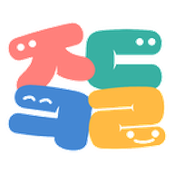

두 손가락으로 확대 · 바깥을 누르면 닫혀요

궁금한 주제를 고르고, 카드를 옆으로 넘기며 따라 하세요.
처음이라면 01 ~ 04만 보셔도 충분해요. 당번은 전체를 한 번 훑어보세요.
화면은 세 칸이에요. 먼저 어디에 뭐가 있는지만 익히면 끝!
체육관에 도착하면 가장 먼저! 이름 하나만 누르면 돼요.
가장 중요한 단계! 예약에 이름이 올라가면 꼭 확인해요.
예약 → 입장 → 게임 종료. 이 세 가지만 기억해요.
사람이 바뀌거나 팀을 빼야 할 때의 방법이에요.
이름을 꾹 누르면 쉬는 이유를 표시할 수 있어요.
하루가 끝나면 이 순서로 정리해요.
출석, 게임 수, 운동 시간이 자동으로 쌓여요.
코트 모양과 글꼴, 소리를 취향대로 바꿔요.
월례회 날의 대진표와 백업 · 업데이트 방법이에요.
태블릿 한 화면에 모든 게 있어요. 번호는 아래 설명과 같아요.
이름 앞 파란 점은 남자, 분홍 점은 여자예요.
코트 카드와 예약 줄이 어떻게 생겼는지 볼게요.
화면 맨 위 줄이에요.
뭔가 잘못 눌렀다면 당황하지 말고 되돌리기부터 눌러 보세요.
출석/대기 칸의 회원명단 버튼을 누르면 출석 체크 창이 열려요.
검색칸은 이름을 고르면 저절로 비워져요. 이어서 다음 사람을 찾을 수 있어요.
당번은 출석을 도와주고, 오늘 당번 두 명을 정해 두어요.
당번 · 수요일 · 월례회는 입장료가 무료예요.
예약에 이름이 올라가면 입장료 송금 확인 바랍니다 창이 떠요. QR을 찍어 송금한 뒤 내 이름 옆 송금 확인을 눌러요.
당번 · 수요일 · 월례회는 무료예요.
내 이름이 아니면 건드리지 마세요. 현금으로 낼 땐 당번에게 내면 돼요.
대기 선수 칸에서 이름 네 명을 누르면 예약 버튼이 켜져요.
잘못 골랐으면 취소를 눌러 처음부터 다시 골라요.
예약 칸 위의 노란 자동 편성 버튼을 누르면 대기 선수를 4명씩 한꺼번에 팀으로 만들어요.
마음에 안 들면 되돌리기 한 번이면 돼요.
급수와 나이가 비슷한 사람끼리, 게임 수가 적은 사람이 먼저 묶여요. 같은 급수 안에서도 실력 차가 크면 상향이나 초심 표시로 보정해요.
설정 › 회원명부 관리에서 눌러요. 상향과 초심은 둘 중 하나만 켜져요.
코트가 비고 팀이 모이면 예약 줄에 입장 가능이 떠요.
예약 줄의 곧 입장 · 약 N분 후로 내 차례를 가늠해요.
코트 위 25점제 칩을 누르면 선택 창이 열려요.
예약할 때 음성이 "이십일점제 입니다"도 함께 말해요. 기록보관소에서 점수제별 평균 시간도 따로 볼 수 있어요.
게임이 끝나면 코트 오른쪽 위 ✕를 눌러요. 확인 창에서 게임 종료를 누르면 끝!
안 누르면 코트 시간이 계속 흘러가요. 5분 미만 · 25분 초과 게임은 기록에서 빠져요.
설정 › 점수 입력 모드를 켜 두면 게임 종료 때 파트너와 점수를 입력해요. 꺼져 있으면 이 단계는 건너뛰어요.
코트에서 바꿀 이름을 눌러요.
예약 줄의 이름을 눌러요. 예약에서는 교체 사유를 꼭 골라야 해요.
정당한 이유 없이 그냥 빼기를 하면 그 팀의 순번이 한 칸 뒤로 밀려요.
예약 줄의 입장 버튼을 꾹 누르면 팀 취소 창이 열려요.
되돌리기로 취소할 수 있어요.
코트 카드를 꾹 누르면 ○번 코트 이동 창이 떠요.
대기 선수 칸에서 내 이름을 길게 눌러요.
다시 운동할 땐 이름을 길게 눌러 표시 해제를 눌러요.
맨 위 종료를 누르면 확인 창이 떠요.
명부에서 이름마다 입장료를 받았는지 확인하고, 합계를 단톡방에 공유해요.
안 뛴 사람은 자동으로 명부에서 빠져요.
입장명부에는 송금 계좌가 함께 보일 수 있어요. 외부에 화면을 공유할 땐 계좌 부분을 가려 주세요.
맨 위 기록 버튼을 누르면 기록보관소가 열려요.
점수제별 기록은 v4.83 이후 끝난 게임부터 쌓여요. 그 전 날짜는 0게임으로 나와요.
이름 검색칸을 누르면 남성부 · 여성부 이름이 한눈에 떠요.
이미지 저장을 누르면 표가 사진 한 장으로 만들어져요.
표 맨 위에 기간과 정렬 기준이 함께 적혀요.
맨 위 설정 › 화면 칸이에요.
처음 설치하면 카카오 코트 + 꾹꾹체로 시작해요.
같은 화면을 4가지 코트 모양으로 볼 수 있어요.
글자 모양만 바꿔도 분위기가 달라져요.
설정 맨 위 소리·진동 칸이에요.
진동은 안드로이드 기기에서만 돼요.
설정 맨 아래의 월례회 모드 › 대진표를 누르고 대진표 열기를 눌러요.
다음 날이 되면 자동으로 일반 모드로 돌아와요.
설정 탭에서 방식을 골라요.
설정 맨 아래에서 참가자를 정하고 대진표를 만들어요.
일정 탭에서 경기를 차례로 진행해요.
대진표 탭에서 이긴 팀이 선을 타고 올라가는 걸 볼 수 있어요.
순위 탭에서 팀별 전적과 득실을 봐요.
설정 아래쪽에 있어요.
데이터는 이 기기에만 저장돼요. 브라우저의 사이트 데이터 삭제를 하면 출석과 게임 기록이 사라지니 절대 누르지 마세요. 얼굴 등록은 백업에 들어가지 않아요.